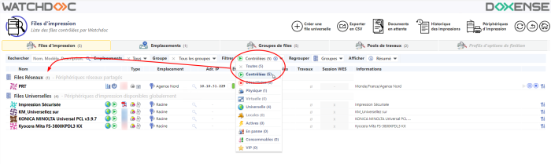
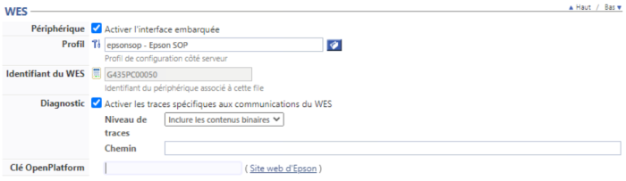
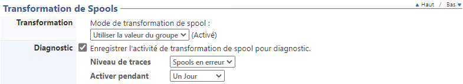

WES Epson - Configurer le WES sur la file
Accéder à l'interface
-
Depuis le Menu principal de l'interface d'administration Watchoc, section Exploitation, cliquez sur Files d'impression, groupes de files & pools :
→ Vous accédez à l'interface présentant les files d'impressions. Dans cette file, activez le filtre Contrôlées, puis sélectionnez la file à configurer :

2. Pour cette file, cliquez sur le bouton Modifier les propriétés de la file situé en bout de ligne.
Modifier les propriétés de la file situé en bout de ligne.
Configurer le mode d'impression de la file
Dans l'interface Propriétés de la file d'impression, section Informations générales, sélectionnez le mode de fonctionnement de la file :
-
Mode: sélectionnez Validation pour que les utilisateurs valident les travaux en attente afin qu'ils soient réellement imprimés.
Si la file appartient à un groupe configuré en mode Validation, vous pouvez aussi sélectionner Comme le groupe.
Configurer le WES sur la file
Dans l'interface Propriétés de la file d'impression, cliquez sur la mention WES pour accéder à la section dédiée.
Dans la section WES de la file :
-
Périphérique : Activer l'interface embarquée : cochez la case pour appliquer un WES sur le périphérique.
-
Profil : dans la liste, sélectionnez le WES à appliquer sur la file. La liste est constituée des profils créés préalablement dans votre instance Watchdoc. Si le profil souhaité n'y figure pas, il convient de le configurer (cf. Créer et configurer un profil WES)
-
Identifiant du WES : ce champ est automatiquement complété de la valeur “$AUTOSERIAL$”. Si vous conservez cette valeur, le serveur détermine automatiquement le numéro de série du périphérique et l'utilise comme identifiant du WES. Vous pouvez saisir directement le numéro de série du périphérique dans ce champ si vous le connaissez.
-
Diagnostic - Activer les traces : cochez la case si vous souhaitez que des fichiers traces relatifs aux communications entre Watchdoc et le WES soient générés et gardés sur le serveur. Précisez ensuite le niveau de traces souhaité :
-
Auto : conserve les traces standard.
-
Inclure les contenus binaires : conserve les traces détaillées.
-
Chemin : saisissez dans la zone le chemin du dossier où vous souhaitez enregistrer les fichiers trace. Si aucun chemin n'est indiqué, par défaut, Wat-chdoc enregistre les fichiers traces dans le sous-dossier \logs du dossier d'installation Watchdoc.
-
-
Clés OpenPlatform : la clé produit est enregistrée dans un fichier .csv, fourni par le service de gestion des licences Epson (cf. opération décrite dans la partie Prérequis d'installation). Saisissez dans ce champ le chemin d'accès au fichier .csv. Si vous ne disposez pas de la clé, cliquez sur le lien Epson web site afin d'accéder au formulaire permettant d'obtenir la clé produit :

Configurer la transformation de spools
-
Mode de transformation :
-
Utiliser la valeur du groupe : permet d'appliquer sur la file le paramétrage de transformation défini pour le groupe de files.
-
Désactivé : permet de désactiver la fonction sur cette file, quel que soit le paramétrage appliqué aux niveaux supérieurs (groupe ou serveur) ;
-
Activé : permet d'activer la fonction uniquement sur cette file quel que soit le paramétrage appliqué aux niveaux supérieurs (groupe ou serveur) ;
-
-
Diagnostic : activer le traçage des spools : cochez la case si vous souhaitez que les spools soient conservés et définissez les conditions de traçage :
-
Niveau de traces : dans la liste, sélectionnez le niveau des traces que vous souhaitez conserver (aucune, erreurs, spools édités et tous) ;
-
Activer pendant :dans la liste, sélectionnez la durée pendant laquelle vous souhaitez activer le traçage des spools (une heure, un jour, une semaine ou un mois) :

-
Valider la configuration
1. Cliquez sur le bouton pour valider la configuration du WES sur la file d'impression.
2. Après avoir configuré le WES, vous revenez sur l'interface de configuration de la file sur la file où vous pouvez installer le WES.